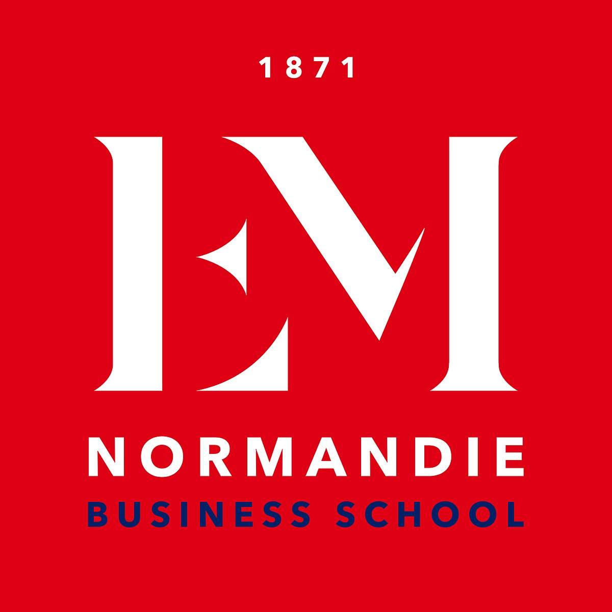
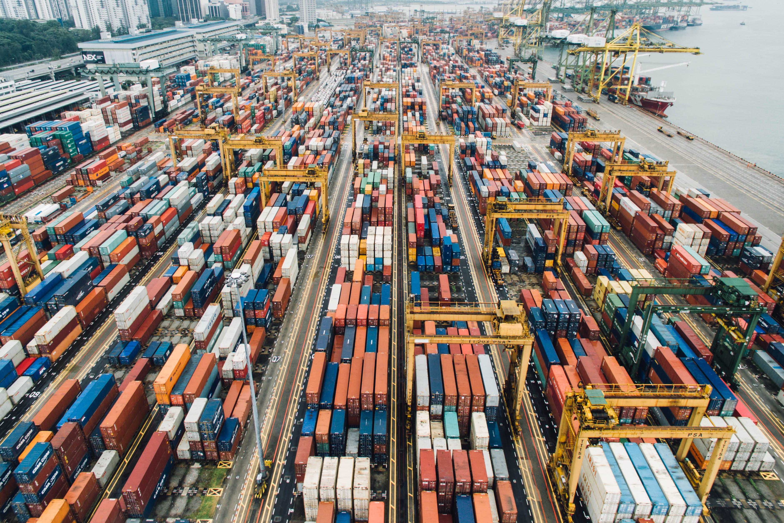
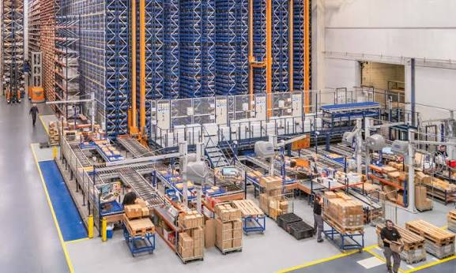
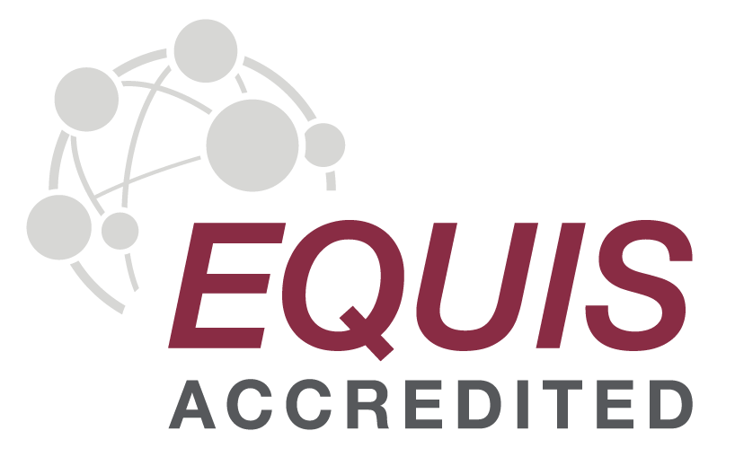

01 ／ STRATEGY
Connect the chain.
Build a strategic understanding of integrated supply chains, procurement and performance.
SUPPLY CHAIN MANAGEMENT · STRATEGIC PROCUREMENT · ANALYTICS
REQUEST INFORMATION ↗DUBAI / 25°06'N 55°09'E — GLOBAL TRADE HUB
MASTER IN SUPPLY CHAIN MANAGEMENT
— INTERNATIONAL LOGISTICS & PORT MANAGEMENT
From the container terminal to the global supply chain. Build the knowledge to coordinate complex operations, connect markets and keep international trade moving.
BEHIND EVERY CONNECTION, THERE IS A SYSTEM.
Understand the networks that keep the global economy in motion.
Explore the strategic and operational side of international logistics, supply chain management and port activity. This programme combines management foundations with specialist knowledge of shipping, transport, trade and operational performance.
From container yards and vessel traffic to the people and systems coordinating every shipment.



PORT CITY / GLOBAL REACH
Dubai sits at the crossroads of international trade and transportation. Study in a city shaped by logistics, maritime activity and connections between markets.
DISCOVER YOUR NEXT MOVE ↗Understand how the moving parts of a supply chain work together — from sourcing and planning to transport, port operations and performance.
Build a strategic understanding of integrated supply chains, procurement and performance.
SUPPLY CHAIN MANAGEMENT · STRATEGIC PROCUREMENT · ANALYTICSExplore international trade principles, shipping and port management, and transport systems.
INTERNATIONAL TRADE · SHIPPING · PORT MANAGEMENTDevelop insight into operations, quality, sustainability and the digitisation of transport.
OPERATIONS · SUSTAINABILITY · DIGITALISATIONDevelop the perspective to see the bigger picture — and the practical understanding to make things happen across borders.
TAKE THE NEXT STEP ↗Put your learning into practice.
The programme includes a four-month internship at the end of year one. Students complete professional experience in an operational field related to logistics, port management, international trade or allied activities, in the UAE or abroad.
EXPLORE YOUR OPPORTUNITIES ↗Build a foundation for roles across supply chain management, logistics operations, procurement, warehousing and freight services.
Take the next step towards a future in international logistics, supply chain and port management.
A relevant Bachelor's degree in logistics, supply chain or port management, or in Business or Management. Full admission criteria include a minimum cumulative GPA of 3.0/4.0 or equivalent.
For this English-taught Master's programme, the published requirement is EmSAT English 1400 or equivalent, subject to applicable exemptions.
Applicants are interviewed by the Admission Committee to assess programme suitability.
Admission requirements, equivalencies and exemptions are assessed by the Admissions Department. Contact the team to confirm your eligibility.
30,000+
members in over 100 countries.
Become part of an international community and discover why students choose to study at EM Normandie Dubai.
Discover EM Normandie ↗Studying at EM Normandie Dubai is probably the best option that you have. Later in life you can work wherever you want.
I absolutely do recommend EM Normandie Dubai. I loved Business Ethics and Law class.
Classes are very hands-on, which is very helpful in boosting our knowledge. The faculty members support us with accommodation, transport, everything.
Student testimonials from the EM Normandie Dubai programme page.
EM Normandie is accredited by some of the world's most respected academic and professional bodies — a mark of quality recognised by employers and institutions worldwide.


Tell us a little about yourself and our admissions team can guide you through the next steps.
This is a front-end demonstration. Connect the form to the official admissions system before publishing.
The programme is offered at EM Normandie Dubai, located in Dubai Knowledge Park.
The programme is taught in English.
The academic programme is one year, followed by a four-month internship.
Core subjects include supply chain management, international trade principles, shipping and port management, operations management, sustainability and transport modes and digitalisation.
Potential career paths include supply chain manager, logistics operations manager, procurement manager, warehouse manager, SCM project manager and freight service manager or coordinator.
Submit an enquiry and the Admissions Department can guide you through the academic, English-language and interview requirements.
The tuition fee for the Master in Supply Chain Management — International Logistics and Port Management is AED 126,000 for the full programme. Contact the admissions team for information on payment plans and any available scholarships.